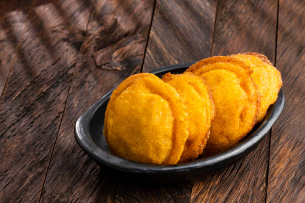
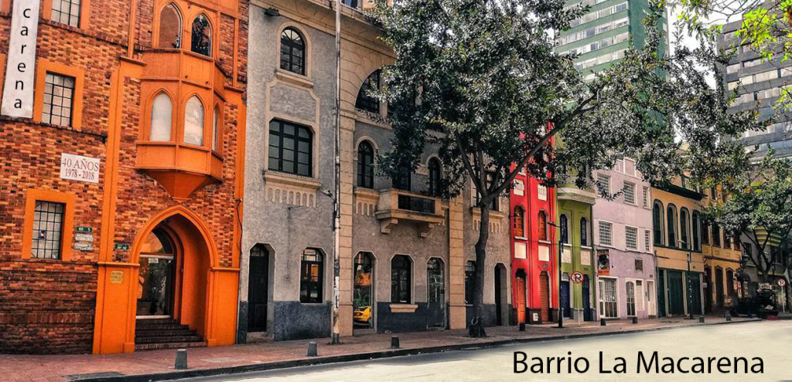
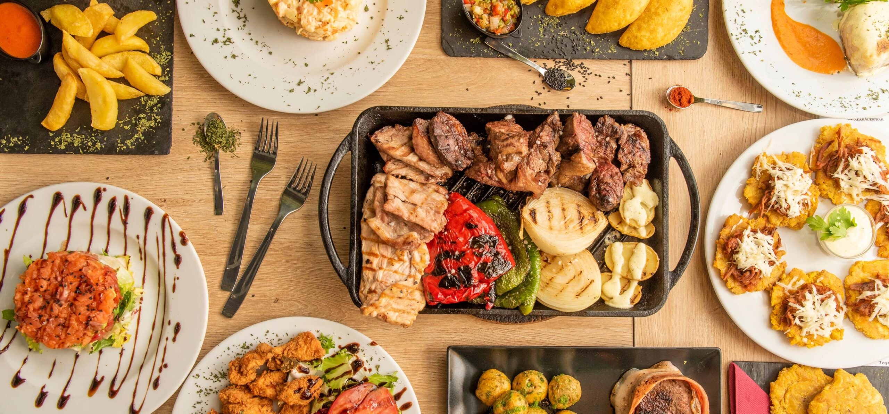

GastronomÃa Bogotana
Los sabores que definen a Bogotá, desde la comida de calle hasta la alta cocina.
Platos TÃpicos

Ajiaco Santafereño
El ajiaco bogotano o santafereño es una sopa tÃpica y tradicional de la región de Bogotá, Cundinamarca, Colombia,​a base de pollo y diferentes clases de papa.
Duración: 1.5 horas
Tamal con Chocolate
El desayuno bogotano por excelencia.
Duración: 1 hora
Arepa de Huevo
El desayuno callejero más auténtico y explosivo de Bogotá. Una arepa de maÃz crujiente rellena de huevo fresco que se frÃe al momento, servida con hogao, ajà y a veces queso o carne.
Duración: 45 minsZonas Gastronómicas

Zona G
El barrio gourmet por excelencia de Bogotá. Calles llenas de restaurantes de alta cocina, fusión, internacional y colombiana moderna. Ambiente elegante pero relajado, ideal para cenas especiales.
Duración: 2 horas
La Macarena
La Macarena es un barrio bohemio y emblemático en el centro de Bogotá (localidad de Santa Fe), conocido como la "Zona M" por su vibrante oferta gastronómica internacional y artÃstica. Destaca por su arquitectura estilo inglés y casas coloridas, la proximidad al Parque Nacional, las Torres del Parque y el Planetario de Bogotá.
Duración: 2.5 horas
Plazas de Mercado
El corazón gastronómico real de Bogotá. Frutas exóticas, hierbas aromáticas, carnes, mariscos frescos y comida preparada al momento. Es la Bogotá más auténtica y vibrante.
Duración: 3 horasExperiencias Culinarias

Taller de Cocina Bogotana
Una experiencia interactiva y deliciosa donde aprendes a preparar platos tradicionales de Bogotá con un chef local.
Duración: 3 horas